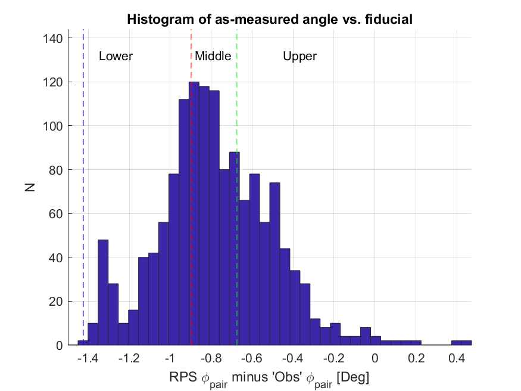

Uniform Birefringence Analysis II: Global Polarization Rotation Angles in B2018 sim subsets
—
J. Cornelison
The goal of this posting is to probe for potential biases when fitting angles in our Polarization Rotation Sims. I also look into a possible cross-check using subsets of CMB data which would help validate as-measured polarization angles.
Testing on Polarization Rotation Sims
In this section, I try replicating what I expect happened with the real data by creating Polarization Rotation sims. These are sims that use one set of polarization angles as input when making TOD sims and another set as input during mapmaking. The procedure I follow is similar to :
Create TOD sims substituting fiducial angles with RPS-measured polarization angles.
Create pairmaps with our fiducial angles (the 'obs' option in get_array_info).
Convert to APS.
Fit global rotation angle to the APS.
In the pager below, I show the global rotation fits for sims create with the above procedure called "B2018+RPS". From the histogram in Figure 1.1, we can likely expect the distribution of α around -0.5° and with standard deviations slightly higher than "B2018-rerun" in Figure 1.3. As a sanity check, I also created another set of sims with a flat +0.5° offset added to the 'obs' chi angles in Step 1 instead of RPS-derived angles -- the expectation being that the distribution would look identical to "B2018-rerun" in figure 1.1 but with a mean of 0.5°
Cross-checking RPS Polarization Angles
We've come up with a procedure to cross-check that the RPS-derived polarization angles without unblinding ourselves to the birefrinence angle.
A comparison of my preliminary RPS measurements vs the polarization angles we're currently using to make maps shows a variance across the focal plane on the order of ~1°.
That means that I should be able to split our real coadded maps into subsets based on the angle we expect from our RPS-derived polarization angles and then compare the difference in global rotation angle among the different subsets. Since we're looking only at relative differences, we keep ourselves blind to the absolute birefringence angle. While it doesn't really give us information on the absolute angle, having a confirmation that I got the relative angles correct lends confidence that there isn't something glaringly wrong in the RPS analysis.
The figure below shows how the data could be split up. In this case, I choose to split the pairs evenly into thirds where the mean difference in global rotation angle between the lower-to-middle and middle-to-upper datasets is expected to be ~0.3°.

Histogram
The limiting factor to this technique is going to be the increased uncertainty on α due to decreasing the detector count and map coverage. So before I create new sims or do anything with the real data, I want to know beforehand whether of not the data has the statistical power at these lower detector-counts/map-coverages to differente the angles. I can quickly check this by looking first at some subsets created from the 10 B2018 sims I made for my previous posting . These sims use the same polarization angles at both the TOD-creation and mapmaking stage so the mean angles will be zero but the distribution should accurately reflect what we can expect when we try doing this on the real data or with sims with as-measured angles injected into them.
The figure below shows the same pager from Fig 2.1, but now includes APS of the three data subsets. My previous posting showed that the B18 purifcation matrix still worked on the whole-year B2018 daughter sims, so I also applied it to these smaller subsets as well to see if it still works.
A pager of EB/TB APS of my 10 sims compared to the 499 sims generated for B2018. The gray lines indicate one realization and the black line indicates the mean of all realizations per-ell. Note that no matrix purification was applied to just B2018, so matrix purified APS are shown for only my sims.
Not surprisingly, we see a slight increase in variance in the smaller B2018 subsets due to a drop in detector-count and coverage. On the plus side, we can still see that the purification matrix still appears to be working effectively.
I now fit the global rotation angle to each signal type of each subset and examine the distributions.
In the Type-8 sims, the scatter in the histograms for the subsets increases by roughly a factor of two compared to B2018-rerun. Still, since the differences in angle between each subset is at least ~0.3°, we should be able to detect the differences in angle to >1-σ in the real data. We can also see that the purification matrix still appears to work on these subsets, albeit to a lesser degree. All of the means are consistent with zero, so I think it's still appropriate to continue using the B18 matrix in lieu of creating new daughter matrices. I tabulate the statistics from the histograms in the figure below:
EB
B2018-rerun
B2018-lower
B2018-middle
B2018-upper
Signal
Mean (°)
STD (°)
Mean (°)
STD (°)
Mean (°)
STD (°)
Mean (°)
STD (°)
2
-0.0
0.00
0.0
0.01
-0.0
0.01
-0.0
0.01
3
0.0
0.00
0.0
0.00
0.0
0.00
0.0
0.00
5
-0.0
0.06
-0.0
0.06
-0.0
0.06
-0.0
0.06
6
0.0
0.01
-0.0
0.03
-0.0
0.04
0.0
0.04
7
-0.0
0.07
-0.0
0.12
-0.0
0.13
-0.0
0.13
8
-0.0
0.08
-0.0
0.14
-0.0
0.14
-0.0
0.14
Before we try this on the real data, my next step is to attempt this on sims with preliminary RPS angles used during TOD creation.
Conclusions
Appendix
Focal plane coverage for each of the simsets. Yellow indicates detector pairs used in the coadds.